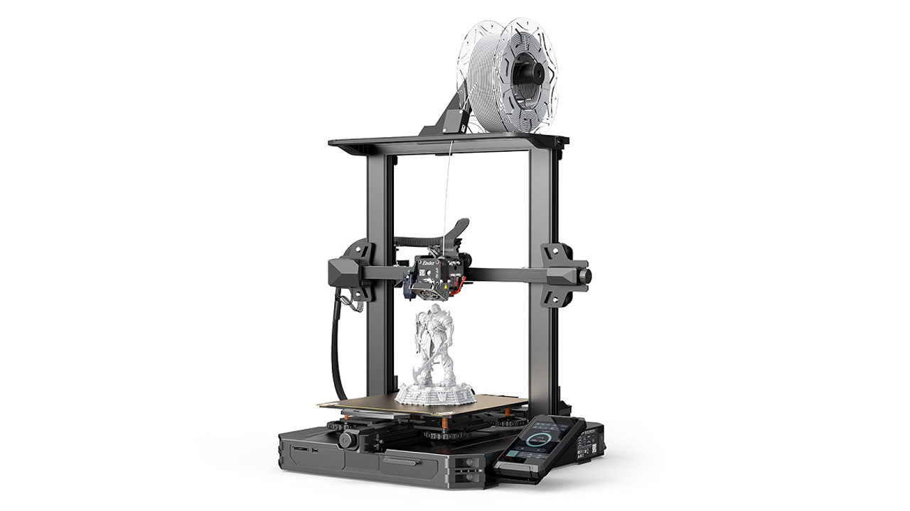
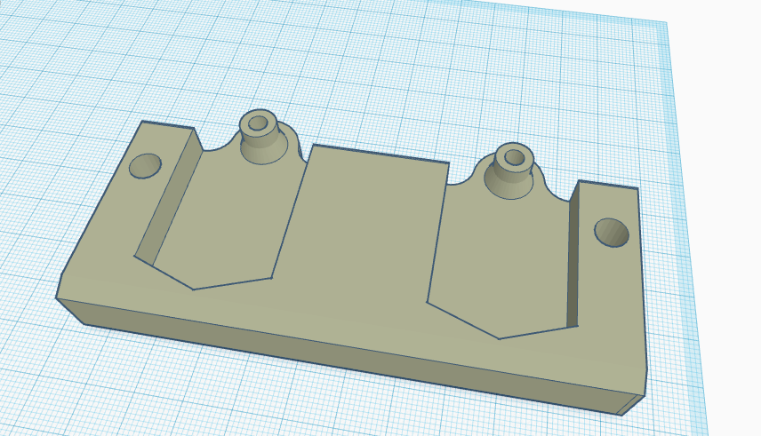

Ya teniendo las herramientas que queria, el laser, un taladro y finalmente su extrusor, asi que ahora le hice un soporrte para poder guardar estas herramientas en la parte superior de la impresora, del mismo modo que el soporte de el filamento esta montado.

Entonces tome el modelo en el que montan las herramientas y lo modifique para que tuviera espacio para poder montarse en la parte superior ademas de espacio para las dos herramientas cuando no se estan ocupando.
